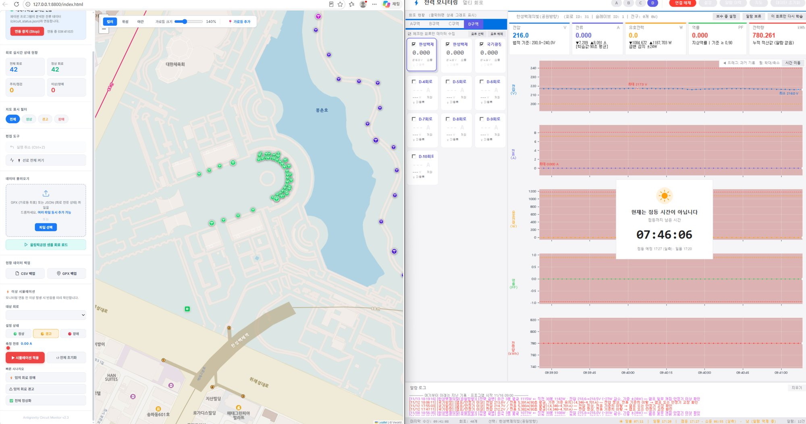

전기 · 안전
가로등 전기시설
고장 감시 시스템
공원 가로등 회로마다 전력량계를 연결해 전압·전류·전력을 실시간으로 측정하고, 지도 위에서 회로별 상태를 확인하는 시스템을 구축했습니다. 야간 순찰에 나가기 전에도 램프 일부 소등이나 안정기 고장 등의 이상을 미리 파악할 수 있습니다.


- 지도 위에서 회로별 상태 확인
- 공원 지도에 가로등 위치와 회로 42개의 상태를 정상·주의·장애로 구분해 표시합니다. 전체/상태별 필터링과 구역별 회로 조회를 지원합니다.
- 전압·전류·전력 실시간 측정(5개 지표)
- 회로별 전력량계로 전압(V), 전류(A), 유효전력(W), 역률(PF), 누적 전력량(kWh)을 실시간으로 수집해 시계열 그래프로 기록합니다.
- 학습한 기준과 비교해 이상 감지
- 회로마다 평소 정상 운전 전류·전력 값을 학습해 두고, 기준 범위를 벗어나 전류가 급감·급증하면 램프 일부 꺼짐이나 안정기 고장 가능성을 알람 로그로 남깁니다.
- 일몰 시각에 맞춘 점등 감시
- 일몰 시각을 기준으로 점등 예정 시간과 남은 시간을 자동 계산해, 가로등이 켜져 있어야 할 시간대에 맞춰 이상 여부를 정확하게 판정합니다.
- 이상 시뮬레이션과 데이터 백업
- 회로 장애·경고 상황을 미리 시뮬레이션해 알람 동작과 지도 표시를 검증할 수 있으며, 현황 및 위치 데이터는 CSV·GPX 형식으로 백업할 수 있습니다.